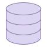
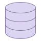

About Me
Introduction
My name is Granton Kihiko Waribe. I'm a computer science student at Kisii University.
I love tech simply because I'm able to use programming to transform my thoughts into something tangible.
Description
I'm a serious guy who loves to pay attention to detail and this enables me to deliver quality work. Curiosity is one of my core identities and in the world of tech it has driven me to great depths so lets dive in.
Programming Languages

 



Education
Power Learn Project
Software Engineering
Nov 2024 - Mar 2025
It's here I'll become a techpreneur.
It's here I'll get support for my next business.
It's here I'll get connections to job opportunities and internships.
It's here I'll win prizes.
It's here I'll grow my network.
Kisii University
Degree Computer Science
Sep 2021 - Apr 2025
I focus on what I can practically do, what I can make. Not the theory.
Kibo School of Technology
Diploma Computer Science
June 2023 - June 2024
GPA 2.7
Online
It's here I learnt solid fundamentals in computer science.
It's here I moved from general knowledge to basic programming and more into intermediate programming concepts.
It's here I became a junior fullstack developer.
Mirera High School
KCSE Grade B-
Jan 2017 - Apr 2021
Naivasha
Strongest subject: Maths, Physics and English
Interests
I'm interested in cybersecurity because when AI replaces developers,
I'll be the one hacking it, breaking it and creating work for developers and myself 👩🏻💻.
I'm interested in cloud computing, the idea that I can create super powerful virtual computers that run in the cloud, fires me up 🔥.
I'm interested in backend development because I love learning the logic of how things work 🤔.
Projects
Addiction Solver
Is a web application that helps people recover from their addictions.
Main features are: peer to peer forum, guidance from an AI Chatbot and educational resources.
Made with Python, Flask, HTML, CSS, Bootstrap, JS and Sqlite3.
link
Chatbot
It's an AI powered chatbot where a person with any addiction can get guidance on how to overcome it.
Made with Zapier.
link
Problema
A web app that keeps records of the technical problems and solutions provided on student forums.
Future student cohorts refer to this app before asking for help on student forums.
Made with HTML, CSS and Javascript.
link
My Book Shelf
An API that can perform CRUD operations on a book database. Made with Node.js, Express.js, CSS, EJS, Prisma and Sqlite3. link
Network Sniffer
A tool that analyzes packets in network tracffic. Decodes them and store the data in a database.
I query the database to know who and what sites my network users visit frequently.
This tool is for education purpose only, the project is private on github because it contains sensitive information.
Made with Python and Sqlite3.
link